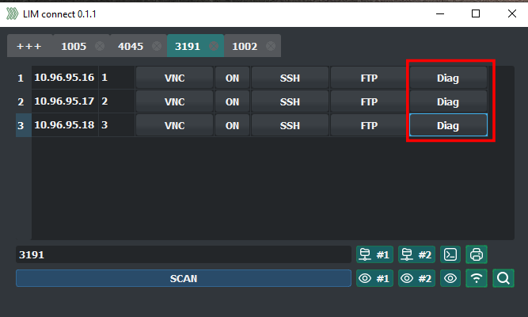
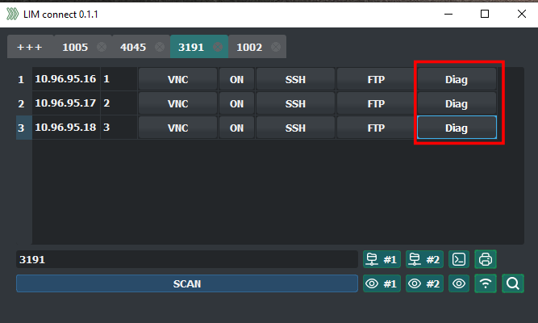

LIM connect - описание
LIM connect - быстрый и удобный менеджер удаленного подключения для
диагностики и настройки оборудования. С его помощью в один клик можно получить доступ к оборудованию
удаленного офиса или торговой точки внутри сети.
Программа берет на себя рутинные задачи, а её инструменты настраиваются индивидуально для каждого
клиента, что позволяет экономить время и ресурсы на решение задач техподдержки.
Базовая настройка ПО позволяет подключаться к следующему
оборудованию:
- Расчетно кассовым узлам (ккм, фискальным регистраторам, 2д/3д сканерам, весам)
- Оргтехнике (принтеры, МФУ, сканеры)
- Сетевым устройствам (маршрутизаторы, коммутаторы, роутеры, точки доступа)
- Серверному оборудованию (сервера, источники бесперебойного питания, облачные ресурсы)
- Клиентскому оборудованию (прайс-чекеры, терминалы, постоматы)
- Торговому оборудованию (терминалы сбора данных, биосмарты)
- Системам видеонаблюдения (камеры, регистраторы, видеоаналитека, системам распознавания лиц)
Использование приложения
Для подключения к объекту(торговая точка или офис)
1) введите номер объекта
2) нажмите SCAN
В главном окне появится список оборудования и будут доступны инструменты для подключения и диагностики.
1) введите номер объекта
2) нажмите SCAN
В главном окне появится список оборудования и будут доступны инструменты для подключения и диагностики.
1) Вкладки. Можно одновременно производить действия с несколькими объектами. Каждый
объект имеет типовой список оборудования.
2) Добавить вкладки
3) IP адрес и номер оборудования, в данной реализации кассы на объекте.
4) Кнопки для быстрого подключения к оборудованию по разным протоколам.

При наведении мышки кнопки подсвечиваются и появляется подсказка по функционалу кнопок.
2) Добавить вкладки
3) IP адрес и номер оборудования, в данной реализации кассы на объекте.
4) Кнопки для быстрого подключения к оборудованию по разным протоколам.
При наведении мышки кнопки подсвечиваются и появляется подсказка по функционалу кнопок.
Кнопки для быстрого доступа к оборудованию выбранного объекта (настраивается
индивидуально под инфраструктуру объекта).
Пример:
1) Доступ по VNC без ввода аутентификационных данных к компьютерам объекта.
2) Доступ к сетевым папкам компьютеров.
3) Доступ по SSH и VNC к серверу объекта.
4) Доступ по HTTP к печатающим устройствам объекта.
Пример:
1) Доступ по VNC без ввода аутентификационных данных к компьютерам объекта.
2) Доступ к сетевым папкам компьютеров.
3) Доступ по SSH и VNC к серверу объекта.
4) Доступ по HTTP к печатающим устройствам объекта.
Сканер сети открывается в отдельном окне, и отдельном потоке. Не блокируя основной
интерфейс.
Результат сканирования выводится в виде IP :: Название оборудования.
Результат сканирования выводится в виде IP :: Название оборудования.
При двойном клике на оборудовании появляется выбор для подключения по разным сетевым
протоколам.
Работа с выбранным оборудованием происходит в отдельном окне.
После подключения к оборудованию можно приступать к настройке. После завершения работ нужно просто закрыть окно.
После подключения к оборудованию можно приступать к настройке. После завершения работ нужно просто закрыть окно.
Модуль диагностики и получения информации с сетевых устройств на примере касс на
Linux.
После нажатия кнопки Diag открывается новое окно, позволяющее взаимодействовать с
выбранной кассой (описание смотрите ниже).


Несколько функций в диагностике кассы Linux.
Остановка, запуск, перезапуск службы торговой программы.
1)Агрегированный результат для быстрого восприятия, где собраны основные
диагностические данные для принятия решения о состоянии диска
2)Полный вывод диагностических данных для детальной диагностики
2)Полный вывод диагностических данных для детальной диагностики
1) Кнопки для чтения логов (журнал системы) с выводом ошибок.
2) Подсветка текста по совпадению.
2) Подсветка текста по совпадению.